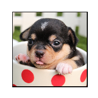
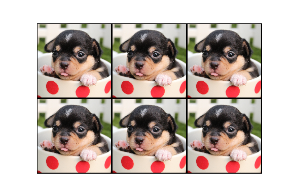
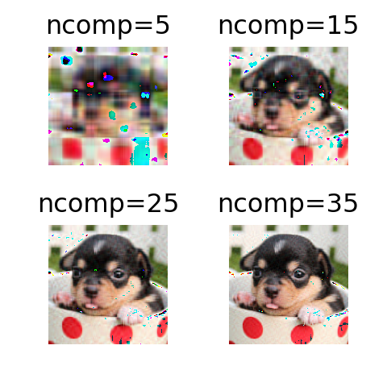
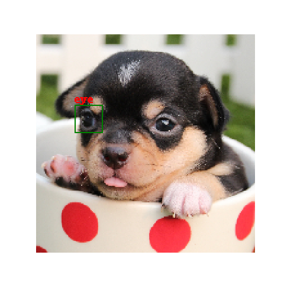

pythonI record my study about image process in this webpage. It is a fun execrise using Image and matplotlib.
jpg file and resizeFirst, we need to learn how to read jpg file into python. Then use Image library, we can easily resize image.
from PIL import Image
import matplotlib.pyplot as plt
import numpy as np
##import image
Im1 = Image.open("./files/dog.jpg")
##resize
Im1 = Im1.resize((200,200))
plt.figure()
plt.imshow(Im1)
temp = plt.axis('off')
plt.show()plt.close()For easy task like add black frame, we don’t really need software like Photoshop. Python can do the job for us.
def black_frame(filename="./files/dog.jpg",framesize=0.01):
Im1 = Image.open(filename)
width,height = Im1.size
prop = 1-framesize*2
rewidth = int(width*prop)
reheight = int(height*prop)
Im2 = Image.new('RGBA',(width,height),'black')
Imtemp = Im1.resize((rewidth,reheight))
Im2.paste(Imtemp,(int(width*framesize),int(height*framesize)))
return Im2
plt.figure()
plt.imshow(black_frame())
temp = plt.axis('off')
plt.show()
plt.close()This maybe useful when we need to use online printing services.
##copy raw image
def copy_jpg(filename="./files/dog.jpg",ncol=3,nrow=2,blackframe=True,framesize=0.01):
if blackframe == True:
Im1 = black_frame(filename=filename,framesize=framesize)
if blackframe != True:
Im1 = Image.open(filename)
width,height = Im1.size
ncol = 3
nrow = 2
Im2 = Image.new('RGBA',(width*ncol,height*nrow))
for left in range(0,width*ncol,width):
for top in range(0,height*nrow,height):
Im2.paste(Im1,(left,top))
return Im2
plt.figure()
plt.imshow(copy_jpg())
temp = plt.axis('off')
plt.show()
plt.close()This is an interesting application of SVD method we learned from linear algebra course.
def SVD_jpg(filename="./files/dog.jpg",ncomp=15):
Im1 = Image.open(filename)
X = np.array(Im1)
shape1,shape2,shape3 = X.shape
n = int(ncomp)
output = np.zeros(shape1*shape2*shape3,dtype=np.uint8)
output = output.reshape(shape1,shape2,shape3)
for i in range(X.shape[2]):
temp = X[:,:,i]
U,s,V = np.linalg.svd(temp)
diagncomp = np.diag(np.zeros(U.shape[0]))
diagncomp[range(n),range(n)] = 1
temp = (U@np.diag(s)@diagncomp)@V
output[:,:,i] = temp
return output
ncomplist = np.linspace(5,35,4)
num=0
fig,ax = plt.subplots(nrows=2,ncols=2)
for i in range(2):
for j in range(2):
ax[i][j].imshow(SVD_jpg(ncomp=int(ncomplist[num])))
ax[i][j].axis('off')
ax[i][j].set_title("ncomp={}".format(int(ncomplist[num])))
num = num + 1
plt.subplots_adjust(hspace=0.5,wspace =0.5)
plt.show()
plt.close()Function like adding line and text is needed for projects about shape detection.
from PIL import ImageDraw
draw = ImageDraw.Draw(Im1)
draw.line([(35,65),(35,90),(60,90),(60,65),(35,65)],fill="green")
draw.text((35,54),"eye",fill = 'red')
plt.figure()
plt.imshow(Im1)
temp = plt.axis('off')
plt.show()
plt.close()